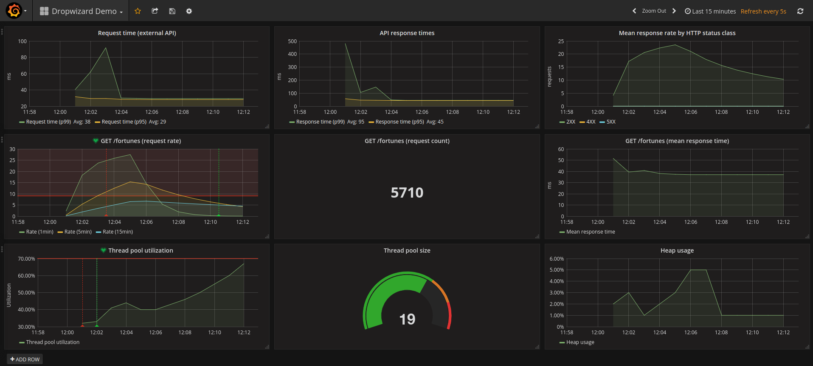

Production-ready Microservices
on the JVM
with
Dropwizard
What is "production-ready"?
Motivation
- We create webapps every day.
- Often they are driven by an API.
- Many aspects of building APIs are tedious.
- Systems become more complex - the have to be split up.
- Now we have to build even more components.
- It's harder to keep more stuff alive.
Criteria
- Quick implementation.
- Easy testing.
- Simple deployment.
- Low ops overhead.
- Simple to monitor.
What is Dropwizard?
Before you run away...
- This is not limited to Java!
- The JVM powers much cooler languages like Clojure, Kotlin, Scala and JavaScript.
Dropwizard is...
- A framework for building small REST APIs.
- Battle-tested libraries glued together.
- Designed to be monitored.

Dropwizard offers you...
- Simple communication with other APIs.
- Database access.
- Data validation.
- Authentication.
- Metrics and health checks.
How it works
How is Dropwizard production-ready?
Quick implementation
- Generate a skeleton project.
- Implement a resource.
- Implement a health check.
- Deploy!
Easy testing
public class WizardResourceTest {
@ClassRule
public static final ResourceTestRule resources = ResourceTestRule.builder()
.addResource(new WizardResource())
.build();
@Test
public void testWizardHasAName() {
final Wizard wizard = resources.client()
.target("/wizards")
.request()
.get(Wizard.class);
Assert.assertEquals("Saruman", wizard.getName());
}
}
Simple deployment
java -jar path/to/package.war server
Low ops overhead
- Requires only a JVM.
- Runs on almost any type of server OS.
# Debian-based:
apt install openjdk-8-jre-headless
# Redhat-based:
dnf install java-1.8.0-openjdk
Simple to monitor
- Complexity of monitoring is moved from monitoring system to the application.
- Health checks as one-stop solution for monitoring status.
curl http://localhost:8081/healthcheck
Simple to monitor - resource performance
@Path("/wizards")
@Produces(MediaType.APPLICATION_JSON)
public class WizardResource {
@GET
@Timed
public Wizard getFortune() {
return new Wizard();
}
}
Simple to monitor - application metrics
final Graphite graphiteClient = new Graphite("localhost", "2003");
final GraphiteReporter reporter = GraphiteReporter
.forRegistry(environment.metrics())
.prefixedWith("dropwizard-demo")
.convertRatesTo(TimeUnit.SECONDS)
.convertDurationsTo(TimeUnit.MILLISECONDS)
.filter(MetricFilter.ALL)
.build(graphiteClient);
reporter.start(10, TimeUnit.SECONDS);
Simple to monitor - processed metrics
Monitoring architecture
Typical Graphite setup
Containerized example
Demo time!
Structure
In practice
Upsides
- Lean and minimalistic.
- High productivity for getting started.
- Sane default project structure.
- Good performance.
- Quick to learn.
- Very stable.
Downsides
-
Messy structure for larger APIs.
- Can be counter-acted by introducing dependency injection.
-
It's easy to lose sight of metrics.
- Set up alerts.
- Integrate metrics into deployment process.
-
It's Java.
- ...but there are tons of cooler languages for the JVM.
- ...and its bad reputation is no longer fully true.
Conclusion
- Awesome out-of-the-box experience.
- Monitoring turns from chore to bliss.
- Built on solid foundations.
- Only useful for compact APIs - large monoliths become a mess.
Resources
- http://www.dropwizard.io/1.1.0/docs/getting-started.html
- http://www.dropwizard.io/1.1.0/docs/manual/index.html
- https://www.artofmonitoring.com/
Up next:
- 15min break
- How to make your team more productive - learnings from 44 sprints